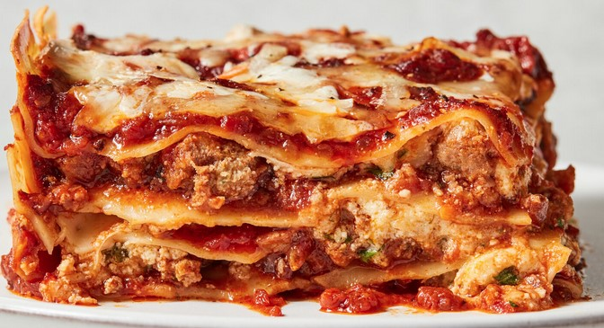

LASAGNA RECIPE

Description:
Lasagna is a type of pasta dish made with layers of flat pasta, meat, cheese, and sauce. It is baked in the oven until bubbly and golden brown. This classic Italian dish is loved for its rich flavors and hearty texture.
Ingredients:
- 9 lasagna noodles
- 1 pound ground beef
- 2 cups ricotta cheese
- 2 cups shredded mozzarella cheese
- 1 cup grated Parmesan cheese
- 2 cups marinara sauce
- 1 egg
- 1 teaspoon dried oregano
- Salt and pepper to taste
Steps:
- Preheat your oven to 375°F (190°C).
- Cook the lasagna noodles according to package instructions; drain and set aside.
- In a skillet, brown the ground beef over medium heat. Drain excess fat.
- In a bowl, mix ricotta cheese, egg, oregano, salt, and pepper.
- Spread a layer of marinara sauce on the bottom of a baking dish.
- Layer 3 lasagna noodles over the sauce, then spread half of the ricotta mixture, followed by a layer of ground beef and a sprinkle of mozzarella cheese.
- Repeat the layers once more, ending with noodles topped with marinara sauce and remaining mozzarella and Parmesan cheese.
- Bake in the preheated oven for 30-35 minutes or until the cheese is melted and bubbly.
Home